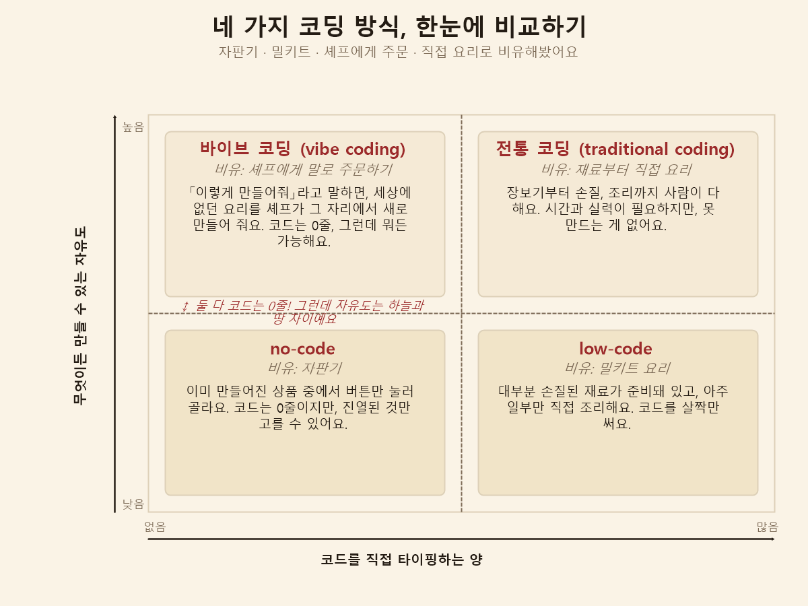

바이브 코딩(Vibe Coding)이란 무엇인가
2026. 7. 12.
이 블로그 전체가 사실 "바이브 코딩"으로 만들어졌어요. 그런데 정작 저도 이 단어를 쓰면서 정확히 뭔지 헷갈렸던 적이 있어서, 개념을 제대로 정리해봤어요.
바이브 코딩이란
바이브 코딩(vibe coding)은 코드를 직접 짜는 대신, AI에게 자연어로 "이렇게 해줘"라고 말하면 AI가 코드를 대신 작성·실행하고, 사람은 결과가 원하는 대로 나오는지 느낌(바이브)만 확인하며 진행하는 방식이에요. 2025년 초 Andrej Karpathy(전 OpenAI/Tesla AI 연구자)가 처음 이 용어를 쓰면서 유행하기 시작했어요.
no-code, low-code, 바이브 코딩, 전통 코딩 — 넷은 어떻게 다를까
비슷해 보이지만 서로 다른 네 가지 방식이 있어요. 코드 자체가 낯선 분이라면, 음식에 비유하는 게 더 와닿을 거예요.
- no-code = 자판기: 이미 만들어진 상품 중에서 버튼만 눌러 골라요. 코드는 한 글자도 안 쓰지만, 자판기 안에 진열된 것만 살 수 있어요. 없는 메뉴는 못 골라요.
- low-code = 밀키트 요리: 재료 손질이 대부분 끝나 있고, 아주 일부만 내가 직접 조리해요. 코드도 딱 그만큼만, 아주 조금 써요.
- 바이브 코딩 = 셰프에게 말로 주문하기: 저도 코드를 한 글자도 안 써요. 그런데 자판기와는 결정적으로 달라요. 자판기는 진열된 것만 고를 수 있는데, 바이브 코딩은 "이런 맛으로 만들어줘"라고 말만 하면 셰프(AI)가 이 세상에 없던 요리를 그 자리에서 새로 만들어줘요. 메뉴판에서 고르는 게 아니라, 말로 시켜서 메뉴 자체를 새로 찍어내는 거예요.
- 전통 코딩(traditional coding) = 장보기부터 직접 요리: 재료 손질부터 조리까지 사람이 다 해요. 시간과 실력이 필요하지만, 못 만드는 요리가 없어요.
여기서 헷갈리기 쉬운 지점이 하나 있어요. no-code와 바이브 코딩은 둘 다 "코드를 한 글자도 안 쓴다"는 점에서 똑같아 보여요. 하지만 no-code는 자판기처럼 정해진 것만 고를 수 있고, 바이브 코딩은 전통 코딩만큼이나 뭐든 새로 만들어낼 수 있어요. "코드를 얼마나 타이핑하느냐"와 "얼마나 자유롭게 만들 수 있느냐"는 서로 다른 축이라서 생기는 차이예요. 아래 그림으로 정리해봤어요.

전통 코딩은 no-code나 low-code로 못 하는 것도 다 할 수 있어요 — 직접 코드를 쓰니까 세상에 없는 것도 만들 수 있거든요. 그렇다고 "전통 코딩이 항상 더 좋다"고 말할 수는 없어요. 간단한 홈페이지 하나 만들 때 전통 코딩으로 처음부터 다 짜면 오히려 시간 낭비예요. 상황마다 어떤 방식이 더 효율적인지가 달라서, 각자의 역할이 따로 있다고들 해요.
그런데 최근엔 조금 다른 이야기도 나오고 있어요 — 바이브 코딩이 사실상 전통 코딩의 자리까지 많이 차지하고 있다는 것이에요. AI가 점점 더 복잡한 코드도 직접 짤 수 있게 되면서, "이건 사람이 직접 코드를 쳐야만 가능하다"고 여겨졌던 일들도 이제 말로 시켜서 되는 경우가 빠르게 늘고 있다고 해요.
바이브 코딩에서 진짜 길러야 하는 힘
바이브 코딩은 코드를 외우지 않아도 된다고 해서 "아무것도 몰라도 된다"는 뜻은 아니었어요. 대신 다른 세 가지 힘이 필요하다고 해요.
- 구조화 능력: 하고 싶은 걸 조목조목 나눠서 말하는 능력이에요. "바이브 코딩으로 웹 만들기" 시리즈 4편에서 "추가할 것 / 지킬 것"으로 나눠서 요청했던 것이 정확히 이 능력을 쓴 예시예요.
- 검증 습관: AI가 만든 결과가 진짜 맞는지 확인하는 습관이에요. 같은 시리즈 3편의 검토 질문들, 7편의 dry-run·체크리스트가 이 습관을 실제로 써본 경험이었어요.
- 기술 감각: 코드를 직접 못 짜도, "이게 대략 어떤 원리로 돌아가는지" 정도는 알아야 결과가 맞는지 판단할 수 있어요. 같은 시리즈 5편에서 터미널·셸·커널을 이해하려고 했던 이유가 바로 이거였어요.
이 수업을 관통하는 세 가지 원칙
- 소유권(ownership): AI가 코드를 대신 써줘도, 그 결과에 대한 책임은 나에게 있다는 태도예요. 3편에서 "이 요청은 코드를 대신 써 달라는 요청이지만, 책임까지 넘기는 요청은 아니다"라고 정리했던 것과 같아요.
- 회의적 신뢰: AI를 믿고 쓰지만, 무조건 다 믿지는 않고 항상 한 번은 검증해보는 태도예요. 7편에서 애매한 파일(
draft.docx)을 AI가 마음대로 분류하게 두지 않고 보류시켰던 게 이 태도예요. - 실험 정신: 틀려도 괜찮으니 일단 해보는 태도예요. 3편에서 폴더 위치를 착각했던 실수도, 이 실험 정신 덕분에 오히려
~의 뜻을 제대로 이해하게 된 계기였어요.
순수 바이브 코딩 vs 이 블로그의 방식
일반적인 "순수 바이브 코딩"은 결과만 보고 내부 원리는 아예 안 궁금해하는 경우가 많아요. 저는 이 블로그를 만들면서:
- 계속 "이게 왜 이렇게 되는 거야?"라고 개념을 캐물었고
- 브랜치/병합 같은 건 직접 타이핑도 해봤고
- 과정을 블로그 포스팅으로 남겨서 나중에 스스로 재현 가능하게 만들었어요
이건 순수 바이브 코딩보다는 "바이브 코딩 + 의도적 학습"에 가까워요. 아무것도 모른 채 결과만 받아쓰는 것보다, 원리를 이해하려는 시도가 들어간 방식이 더 건강하다고 이야기돼요.
왜 "토큰 절약"을 신경 쓰는 사람도 있을까
바이브 코딩을 하다 보면 "토큰을 절약해달라"고 요청하는 사람도 있어요. 이건 AI 사용 비용, 응답 속도, 그리고 AI가 한 번에 기억할 수 있는 대화 분량(토큰 한도)과 관련이 있어요. 자세한 내용은 아래 글에서 다뤘어요.
실제로 이 블로그를 만든 과정
Git이 뭔지도 몰랐던 상태에서, Claude와 대화하면서 바이브 코딩으로 Git 설치부터 GitHub Pages 홈페이지까지 만든 전 과정을 시리즈로 정리해뒀어요. 1편부터 순서대로 보시면, 실제로 바이브 코딩이 어떻게 진행되는지 감이 오실 거예요.
바이브 코딩을 하려면 AI가 실제로 일할 수 있는 개발 환경(작업대)이 먼저 필요해요. 그 작업대를 하나도 몰랐던 상태에서 이해해나간 과정도 정리해뒀어요.